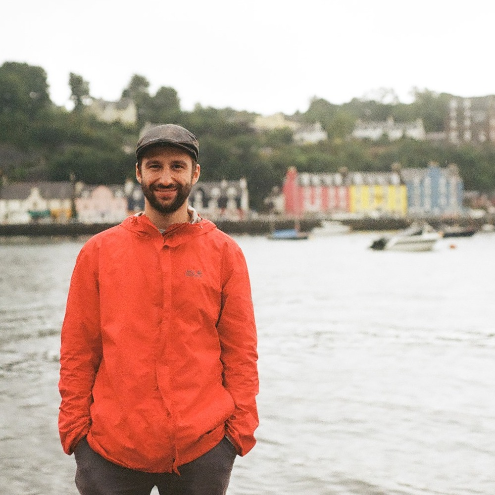

PhD Student, RWTH Aachen

I am member of the Institute for Theoretical Particle Physics and Cosmology (TTK) at RWTH Aachen, pursuing a PhD under the supervision of Professor Julien Lesgourgues.
My passion for physics has developed over the years and has now converged towards cosmology and astrophysics, with a particular emphasis on gravitational-wave probes and observations. After obtaining a Bachelor degrees in Physics at ETH Zurich (2020), I moved to Lausanne to obtain a Master of Science in Physics from EPFL (2023). While my courses were mainly focused on particle physics, I became increasingly interested in cosmology after taking courses in general relativity, astrophysics, and the thermal history of the Universe, which led me to write my Master’s thesis on primordial black holes at the University of Geneva. Currently, my doctoral research is focused on leveraging the potential of gravitational wave observations for cosmology. My work is strictly related to future measurement from planned gravitational waves detectors specifically MAGIS, the Einstein Telescope, and LISA.
The observation of our cosmos are rapidly advancing, and so are the techniques to infer the fundamental parameters of cosmology. A very powerful tool for this objective is the cross-correlation of different probes. One of my current research objectives is to enhance cross-correlation techniques, both with Monte Carlo Markov Chain simulation that with Fisher analysis, in order to exploit the complementarity of various measurements and improve our ability to infer cosmological parameters. In a recent preprint available on on arXiv: arXiv:2510.19913 [gr-qc], I explore the potential of the rapidly growing number of gravitational wave event detections as a complementary tracer of matter overdensity, in addition to galaxy clustering.
While neutron star binaries and binary black holes have been studied in depth and already measured with gravitational waves detectors, white dwarf binaries are other compact objects that are often overlooked in the gravitational waves community, but are equally exciting. In my recent work, in preprint on arXiv: arXiv:2510.08699 [astro-ph.CO], I looked at the possibility of detecting their gravitational wave signature with future atom interferometers. The current sensitivity estimation are very promising, anticipating many detection of white dwarf mergers and their consequent, visible, final events, opening a new window on multi-messenger astronomy.
I am personally convinced that gravitational wave astronomy represent the new frontier of observational cosmology, and the possibility of detecting a cosmological background is one of the most exciting topic of our times. I am therefore studying the various contributions to the stochastic gravitational wave background and working on new techniques to recognise them.
Institute for Theoretical Particle Physics and Cosmology (TTK)
Rheinisch-Westfälische Technische Hochschule (RWTH) Aachen
Otto-Blumentahl-Straße 12
52074 Aachen
Germany
Office: MP116